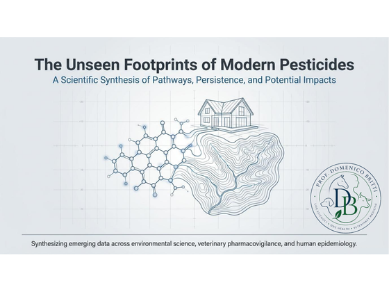
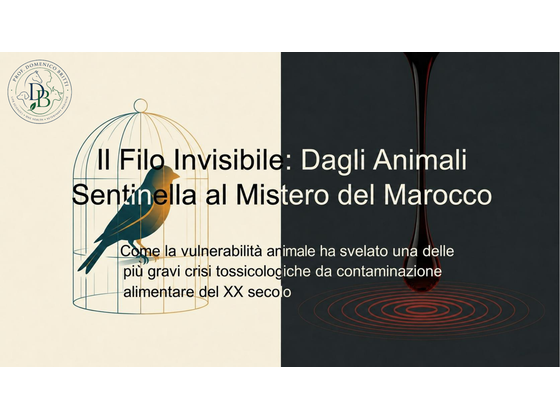
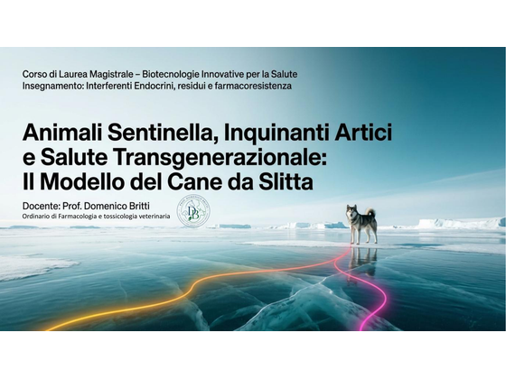
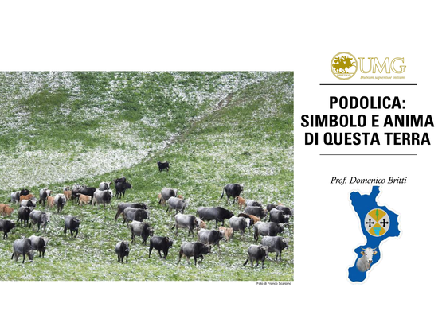

Academic role
Full Professor at the University “Magna Graecia” of Catanzaro, Department of Health Sciences, in the field of Life Sciences, One Health, Veterinary Medicine.
One Health · Veterinary pharmacology · Veterinary toxicology
Full Professor of Veterinary Pharmacology and Toxicology at the University “Magna Graecia” of Catanzaro. My scientific activity integrates veterinary pharmacology, environmental toxicology, medicine safety, animal welfare and the One Health approach.
Profile
Full Professor at the University “Magna Graecia” of Catanzaro, Department of Health Sciences, in the field of Life Sciences, One Health, Veterinary Medicine.
Experience in regulatory affairs, animal welfare assessment, veterinary medicines and the application of legislation on animal experimentation.
My scientific work focuses on the relationship between animal health, human health and the environment, with particular attention to emerging contaminants and systemic impacts.
Research
Study of mechanisms of action, species-specific differences, safety of use and regulatory implications of veterinary medicinal products.
Analysis of the effects of antiparasitic and pesticide compounds on animals, ecosystems, non-target organisms and production chains.
Integrated approach to the study of PFAS, endocrine disruptors, antimicrobial resistance, environmental residues and chemical pressures in agro-livestock systems.
Translation of toxicological evidence into decision-making tools, risk-management recommendations, labelling, authorisation and surveillance.
Teaching
A course designed to connect molecules, animal species, pharmacokinetics, pharmacodynamics and prescribing responsibility.
Publications
Articles and commentaries
A note on the role of veterinary medicines as a point of connection between animal health, food safety, the environment and public health.
A reflection on the value of companion and farm animals as early indicators of chemical pressure in shared environments.
A brief note on the need to connect material chemistry, formulations, emerging contaminants and risk assessment.
Presentations and materials

Popular-science presentation.
A scientific synthesis of modern pesticide exposure pathways, focusing on indoor persistence, the pet pathway, veterinary pharmacovigilance, PFAS, so-called inert ingredients and risk-based pest management.

Popular-science presentation.
A One Health reading of sentinel animals as early indicators of shared environmental exposures, starting from the historical case of contaminated cooking oil poisoning in Morocco.

Popular-science presentation.
A One Health reading of sled dogs as sentinel models for Arctic contaminants, organohalogen pollutants, endocrine disruptors, transgenerational health, biomarkers and risk assessment.

Popular-science presentation.
A cultural, zootechnical and territorial reading of the Calabro-Lucanian Podolica cattle, across archaeology, Magna Graecia, transhumance, animal welfare, biodiversity and the identity of inland areas.
Projects
Management models that reduce the dispersion of chemical substances in pastures and enhance the health, environmental and nutritional quality of products.
Initiatives devoted to the relationship between parasitism, animal welfare, biodiversity, environmental residues and the sustainability of livestock systems.
Educational and cultural pathways oriented to veterinary medicine as a tool for cooperation, care for creation and dialogue among countries.
Contact
For scientific collaborations, seminars, interdisciplinary projects and initiatives in veterinary pharmacology, environmental toxicology and One Health.